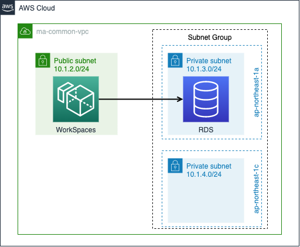

1. 20201130¶
1.1. Amazon RDSにアクセスするSpringアプリケーション¶
1.1.1. RDS構築¶
設定
項目
設定値
備考
VPC
ma-common-vpc
workspacesのlocal applicationから接続するため
Subnet Group
ma-yamada-database-1
2つ以上の別AZのPrivate Subnetを指定既存の共用サブネットを借用
セキュリティグループ
MA-yamada-rds-sg2
WorkSpacesのSGからのインバウンド(5432ポート)のみ許可
DBテーブル構築
psqlインストール
sudo yum update -y sudo yum install -y postgresql psql -U username -d sample_database -h xxxxxxx.ap-northeast-1.rds.amazonaws.com postgres=> \i sample_database.sql
テーブル構成
AWS認証設定
credential設定(Trello)
[default] aws_access_key_id=XXXXXXXXXXXXXXXX aws_secret_access_key=YYYYYYYYYYYYYYYYYYYYYYYYYYYYY
![participant App as a
participant SampleService as s
participant UsrRepository as uR
participant GroupRepository as gR
a -> s : setData()
== init() ==
s -> uR : deleteAll()
s -> gR : deleteAll()
== main ==
s -> gR : saveAll(Arrays.asList(new Group[]{group1, group2}));
note right
mynavi-group1
mynavi-group2
end note
s -> uR : saveAll(Arrays.asList(new User[]{user1, user2}));
note right
taro
MAIL: [test@test.com, test1@test.com]
ADDRESS: Tokyo Chiyodaku
MEMBERSHIP: [mynavi-group1, mynavi-group2]
hanako
MAIL: [test2@test.com, test3@test.com]
ADDRESS: Tokyo Chuoku
MEMBERSHIP: [mynavi-group2]
end note](../../_images/plantuml-c9e9d30e7577db0c8bb0648fa64d7142d2755cc5.png)